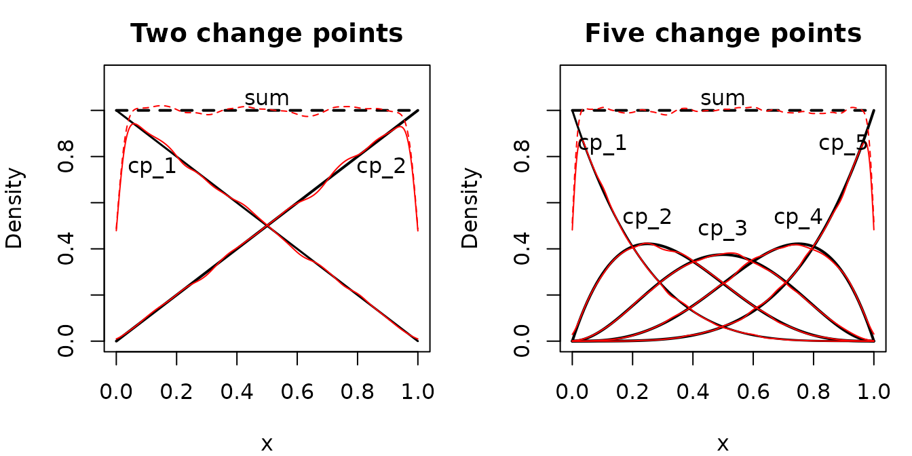

This article documents the default priors in mcp. These
are the priors used if you do not specify otherwise in
mcp(..., prior = list()).
In short, mcp uses the conventional default priors of
rstanarm for intercepts and coefficients and of
brms for scale parameters, with mcp-specific defaults for change
points, autocorrelation, and identity-link binomial models, and a few documented deviations.
See Working with priors for how to set your own priors and do prior predictive checks.
Default priors on regression parameters
mcp automatically assigns weakly
informative default priors to the coefficients of all distributional
parameters (mu, sigma, shape, and
AR/MA). They rule out absurd values while staying wide enough that the
data dominate in most applications. They are designed for stable
estimation and prediction. You can inspect all resolved priors for any
fitted model using prior_summary(fit, verbose = TRUE).
Priors for hypothesis tests should be informed by the problem at hand.
The default priors follow three principles:
-
Coefficient priors are autoscaled as in
rstanarm: For the mean (mu), \beta \sim \text{Normal}\left(0, \frac{2.5 \cdot s_y}{\operatorname{sd}(\text{column})}\right) where s_y = \operatorname{sd}(y) for identity links and s_y = 1 for other links (logit and probit links use 1.5 and 1 instead of 2.5; see deviations). \operatorname{sd}(\text{column}) is the SD of the coefficient’s model-matrix column, including the 0/1 dummies of factors. This makes the prior largely invariant to the units of x and y, e.g., whether time is measured in seconds or minutes. A priori, a change of one SD in a predictor changes the response (on the link scale) by less than 5 \cdot s_y with 95% probability.For x-terms, \operatorname{sd}(x) is computed over all data, so slope priors do not depend on the number or location of change points. Powers such as
I(x^2)use \operatorname{sd}((x - \min(x))^2). Interactions such asx:zmultiply by the SD of the term without x, \operatorname{sd}(x) \cdot \operatorname{sd}(z), while 0/1 indicators such as the dummies inx:groupcontribute a factor of 1 (see deviations).The autoscaling does not account for segment length. If you expect steep slopes or strong curvature within short segments, consider setting a wider prior.
Intercepts follow
rstanarm: \text{Normal}(\operatorname{mean}(y), 2.5 \cdot \operatorname{sd}(y)) for identity links, \text{Normal}(0, 1.5) for logit links, and \text{Normal}(0, 1) for probit links (see deviations for these and for log links). Similar torstanarm’s prior on centered predictors, the default prior onIntercept_1applies to the value at the start of the data, \min(x), rather than at x = 0.Intercept_1itself is still the value at x = 0, as inlm(), soprior_summary()shows its prior given the slope, e.g.,dnorm(mean(y) - x_1 * min(x), 2.5 * sd(y)). Later intercepts are already at their change point. See deviations for details.Scale parameters follow
brms: The residual SD and, for identity links, group-level SDs get a half-Student-t, \text{Student-t}(3, 0, S_y) \, T(0, ) with S_y = \max(2.5, \operatorname{mad}(y)). Half-Student-t priors are a standard weakly informative choice for scale parameters, as recommended for group-level SDs by Gelman (2006).
Summary reference table
General quantities used in the table below:
\operatorname{sd}(\text{column}): the SD of the coefficient’s model-matrix column, as described above.
response scale S_y = \max(2.5, \operatorname{mad}(y))
log-rate scale S_{\text{rate}} = \max(2.5, \operatorname{mad}(y_{\text{rate}}))
log-rate y_{\text{rate}} = \log(y) - \text{offset}, with y \le 0 replaced by 0.1, as
brmsdoes for zeros (and \text{offset} = 0 if absent)As in
brms, \operatorname{mad}() and the \operatorname{median}() of log-rates are rounded to one decimal.prior_summary(fit)shows the resulting values.
| Parameter & Link | Intercept | Coefficients | Group SD (\sigma_{\text{group}}) | Precedent |
|---|---|---|---|---|
Mean (\mu): Identity
link (gaussian, poisson*) |
dnorm(mean(y), 2.5 * sd(y)) |
dnorm(0, 2.5 * sd(y) / sd(column)) |
dt(0, S_y, 3) T(0, )† |
rstanarm (group SD: brms) |
Mean (\mu): Log
link (poisson, negbinomial,
gaussian) |
dnorm(median(y_rate), S_rate) |
dnorm(0, 2.5 / sd(column)) |
dnorm(0, 2.5) T(0, )† |
rstanarm coefficients |
Mean (\mu): Logit
link (binomial, bernoulli) |
dnorm(0, 1.5) |
dnorm(0, 1.5 / sd(column)) |
dt(0, 1.5, 3) T(0, )† |
rstanarm with mcp-specific scales |
Mean (\mu): Probit
link (binomial, bernoulli) |
dnorm(0, 1) |
dnorm(0, 1 / sd(column)) |
dt(0, 1, 3) T(0, )† |
rstanarm with mcp-specific scales |
Mean (\mu): Identity
link (binomial, bernoulli) |
dunif(0, 1) |
contrasts: dunif(-1, 1)slopes: dnorm(0, 1 / sd(column))
|
dt(0, 1, 3) T(0, )† |
|
Constant dispersion (implicit sigma,
shape) |
sigma_1:
dt(0, S_y, 3) T(0, )shape_1:
dinvgamma(0.4, 0.3)
|
— | — | brms |
Modeled sigma() (log link) |
dt(0, 2.5, 3) |
contrasts: dt(0, 2.5, 3)slopes: dt(0, 2.5 / sd(column), 3)
|
dt(0, 2.5, 3) T(0, )† |
brms intercept |
Modeled shape() (log link) |
dnorm(0, 2.5) |
contrasts: dnorm(0, 2.5)slopes: dnorm(0, 2.5 / sd(column))
|
dnorm(0, 2.5) T(0, )† |
|
Autocorrelation (ar(),
ma()) |
dnorm(0, 0.5) T(-1, 1) |
contrasts: dnorm(0, 0.25)slopes: dnorm(0, 0.25 / sd(column))
|
— | |
Change points (cp_i) |
dunif(min(x), max(x))** |
— | dnorm(0, (max(x) - min(x)) / (2 * (n_cp() + 1))) T(0, ) |
* For poisson(), these are rstanarm’s
Gaussian defaults (see deviations), and the
intercept is truncated T(0, ), or
T(-min(offset), ) with an offset(). † Group
SDs for slopes are divided by \operatorname{sd}(\text{column}). A blank
precedent means that the default is mcp-specific. ** Ordered (flat Dirichlet)
Default prior on change points
The default prior on change points is a flat Dirichlet prior on the
segment lengths, also known as “uniform order statistics”. It treats any
set of ordered change points within the observed range of x as equally likely. Equivalently, the change
points are distributed like sorted draws from \text{Uniform}(\min(x), \max(x)). This is
also how fit$prior and the JAGS code write it:
dunif(min(x), max(x)) on each change point, restricted to
ordered change points. See Working with priors for how
to set other priors on change points.
With K segments, i.e., K - 1 change points \tau_1 < \dots < \tau_{K-1}, this prior has some nice properties:
-
Beta marginals: Each change point has a beta prior, scaled to the observed range of x:
\frac{\tau_k - \min(x)}{\max(x) - \min(x)} \sim \text{Beta}(k, K - k)
For 1 change point, this is \text{Beta}(1, 1), i.e., \text{Uniform}(\min(x), \max(x)). For 2 change points, \tau_1 and \tau_2 have scaled \text{Beta}(1, 2) and \text{Beta}(2, 1) priors.
-
Evenly spaced on average: The prior means are
\mathbb{E}[\tau_k] = \min(x) + \frac{k}{K} (\max(x) - \min(x))
For example, with 2 change points, the prior means are at 33% and 67% of the observed range of x. With 5 change points, they are at 16.7%, 33.3%, 50%, 66.7%, and 83.3%.
Symmetry and flat sum: The prior is symmetric along x, and the sum of the prior densities of all change points is uniform across the observed range of x.
More change points, more informative: For a given range, adding change points makes the prior on each change point more informative because they are “squeezed” together.
The plot below compares these theoretical beta marginals (black
lines) with prior draws from mcp (red lines) for 2 and 5
change points:

The Dirichlet prior on segment lengths
The change points divide the observed range of x into K segments. Instead of a prior on each change point, one can place a prior on how the range is divided, i.e., on the relative segment lengths
s_k = \frac{\tau_k - \tau_{k-1}}{\max(x) - \min(x)}, \qquad k = 1, \dots, K,
with \tau_0 = \min(x) and \tau_K = \max(x), the ends of the observed
range. They are positive and sum to 1. The Dirichlet
distribution is the standard prior for such proportions. It also
underlies monotonic effects in brms (Bürkner & Charpentier,
2020). The symmetric Dirichlet prior with concentration \alpha has density
p(s_1, \dots, s_K) \propto \prod_{k=1}^{K} s_k^{\alpha - 1}.
With \alpha = 1, the density is
constant, so every division of the range into ordered segments is
equally likely. This is mcp’s default prior. With \alpha > 1, divisions with short segments
are less likely, favoring evenly spaced change points away from the ends
of the observed range. The marginal priors generalize to
\frac{\tau_k - \min(x)}{\max(x) - \min(x)} \sim \text{Beta}(k\alpha, (K - k)\alpha).
The segment lengths are a linear function of the change points, so the same density applies to the ordered change points. For \alpha > 1, the prior is therefore the default prior multiplied by the factor \prod_k s_k^{\alpha - 1}. This factor is 1 when all segments are equally long and approaches 0 when a segment becomes very short. See Working with priors for how to set \alpha and From formulas to sampler code for how JAGS samples it, including why \alpha < 1 is not supported.
Default priors on group-level effects
Each group-level effect has a population-level SD parameter.
Group-level deviations in the predictor part use a zero-mean normal
distribution governed by that SD, as in ordinary multilevel regression.
With a multi-coefficient || term, every independent
coefficient has its own SD. For identity links, the SD receives the
brms half-Student-t prior on the response scale. Log,
logit, and probit links and SDs inside sigma() and
shape() use other scales (see the table above). Slope SDs
are divided by \operatorname{sd}(\text{column}), like the
population-level slopes. For distributional parameters, deviations and
SD are on that parameter’s link scale (for example, effects inside
sigma() are on the log-SD scale).
Group-level change points
Group-level change points use the same ordinary normal hierarchy,
additionally bounded by the observed range of x and ordered within each group. Therefore,
cp_i_id_sd is the SD of the normal distribution
before truncation rather than the realized SD. See group-level effects with mcp
for the model equation and practical interpretation.
The default prior on the SD of group-level change points, e.g.,
cp_1_id_sd, is \text{Normal}\left(0, \frac{W}{4}\right) T(0, ),
\qquad W = \frac{2 (\max(x) - \min(x))}{N + 1} where N is the number of change points. W is the expected width of the interval in
which a group’s change point can vary, i.e., between its two neighboring
change points. Under the default prior, adjacent change points are on
average (\max(x) - \min(x)) / (N + 1)
apart. With one change point, W is the
observed range of x.
The scale W / 4 is calibrated on the
realized spread of the group-level change points rather than on
cp_i_id_sd itself. Because group-level change points are
truncated to an interval of width W,
their realized SD cannot exceed W /
\sqrt{12}, the SD of a uniform distribution on that interval.
When cp_i_id_sd is larger than about W / 2, the truncated normal is practically
uniform, so the data carry little information to distinguish between
larger values. With the default prior, the realized SD as a fraction of
its maximum W / \sqrt{12} is
approximately uniform between 0 and 1 a priori (prior deciles: 0.10,
0.20, 0.30, 0.39, 0.49, 0.59, 0.69, 0.79, 0.87; simulated with \text{cp}_i uniform within the interval).
This is similar to how the logit and probit intercept priors are
(approximately) uniform on the probability scale (read more). Thus, a priori, group-level change
points are exchangeable around the population-level change point, so
groups with little information about their change point are pooled
towards it.
The prior is half-normal rather than the half-Student-t used for
predictor group-level SDs. Because the data carry little information
about large values of cp_i_id_sd, a heavy upper tail would
pass largely unchanged into the posterior. When adjacent change points
both vary by group, the actual interval depends on the neighboring
group-level change points, so W is an
approximation.
Deviations from rstanarm and brms
Here, a deviation means a default that differs from the precedent
that mcp follows for that parameter: rstanarm
for intercepts and coefficients and brms for scale
parameters. brms’s improper flat coefficient priors are not
a precedent, since JAGS does not support them.
mcp deviates from these precedents in a few places:
Logit and probit links (
binomial(),bernoulli()):mcpusesrstanarm’s autoscaling, but with scales that make the intercept prior (approximately) uniform on the probability scale. For probit,dnorm(0, 1)is exactly uniform on the probability scale. For logit,dnorm(0, 1.5)is approximately so (95% interval from about 0.05 to 0.95; McElreath, 2020, section 11.1). Larger scales, such asrstanarm’s 2.5, place excess prior mass near 0 and 1. This is particularly undesirable in change-point models, where several segments each contribute their own intercept. Group-level SDs use the same scales (1.5 and 1) instead ofbrms’s 2.5.Log links (
poisson(),negbinomial(),gaussian(link = "log")): Coefficients followrstanarm. The intercept is centered on the data, as inbrms, so that it adapts to the magnitude of the counts. But it has normal tails rather thanbrms’s Student-t tails, because exponentiated Student-t tails imply infinite expected counts (\mathbb{E}[\exp(\eta)] = \infty). Group-level SDs are half-normal for a similar reason: their lighter tails make extreme group multipliers far less likely. With anoffset(), the intercept is a log-rate, somcpcomputes its location and scale from the observed log-rates, \log(y) - \text{offset}.brmssubtractsmean(offset)from the location but computes the scale from the log-counts, so its prior widens when exposures vary, even if the rates do not.Identity link for
poisson():rstanarmapplies its unscaled defaults, e.g.,normal(0, 2.5)for the intercept, which ignore the magnitude of the counts.mcpuses the Gaussian defaults instead, which are on the response scale.Offsets with identity links:
rstanarmcenters the intercept onmean(y), ignoringoffset(). But with anoffset(), the intercept describes y - \text{offset}, somcpcomputes its location and scale from y - \text{offset}, just as for log links.brmssubtractsmean(offset)from the location but computes the scale from y.Intercept placement:
rstanarmandbrmsplace the intercept prior on centered predictors.mcpplaces the default prior onIntercept_1at \min(x), which matters when x is far from zero, e.g., calendar years. Likewise, factor contrasts with their own x-terms get their default prior at \min(x), e.g.,stateB_1iny ~ 1 + state * x. When the x-terms are split by factor levels without a common x-term, e.g.,y ~ 1 + x:state, the prior onIntercept_1applies to the average value at \min(x), weighting each level by its share of the data as in \operatorname{mean}(y). User-specified priors onIntercept_1apply directly at x = 0. Other predictors are not centered, so the prior applies where they are zero. If such a predictor is far from zero, e.g., age in years, center it before fitting or set a prior onIntercept_1. Read more about the mcp model.x-term interactions:
rstanarmscalesx:zby the SD of the model-matrix column, \operatorname{sd}(x \cdot z), which depends on the location of x and z. For example, it is around 1000 forx:groupwhen x is calendar years. Since x-terms are measured from the change point, the location of x is not meaningful here.mcpinstead uses \operatorname{sd}(x) \cdot \operatorname{sd}(z), where 0/1 indicators contribute a factor of 1, so the prior applies per SD of x and z.Factors without an intercept (
0 + state): Iny ~ 0 + state, R codes a coefficient for every factor level instead of an intercept and contrasts.rstanarmuses its coefficient prior, centered at zero, which is strongly informative when the data are far from zero. This applies where a segment starts at zero: segment 1, and joined segments with no earlier intercept or x-term, e.g., segment 2 inlist(y ~ 0, ~ 0 + state). In other joined segments, e.g.,~ 0 + stateaftery ~ 1 + x, the coefficients are jumps from where the earlier segment left off, so they get the contrast prior.Coefficients in
sigma(),shape(),ar(), andma(), and group-level SDs: The prior scale of slopes is divided by \operatorname{sd}(\text{column}), so that it applies per SD of the predictor, as formu. Contrasts are not divided because a 0/1 dummy has no units to convert.brmsuses flat priors for these coefficients and the same scale for all group-level SDs.
mcp-specific priors
Some parameters have no precedent in rstanarm or
brms, so mcp uses its own defaults:
Autoregressive and moving-average terms:
mcpuses zero-centereddnorm(0, 0.5) T(-1, 1)priors to favor stationary and invertible dynamics, with modest changes across segments and predictors (dnorm(0, 0.25)).Identity links for
binomial()andbernoulli():rstanarmdoes not support this link, andbrmsapplies its generic defaults (e.g.,student_t(3, 0, 2.5)for the intercept), which do not respect that probabilities lie between 0 and 1.mcpuses a uniform intercept (dunif(0, 1)), uniform contrasts on the possible differences (dunif(-1, 1)), and slopes ofdnorm(0, 1 / sd(column)).Change points: As described above. The SDs of group-level change points have an
mcp-specific prior, described above.
Applied discussion of default priors in other articles
Some articles discuss the default priors in the context of a particular family or model component:
- Poisson models and the negative-binomial extension.
- Binomial and Bernoulli models.
-
Distributional
parameters such as
sigma(). -
Autocorrelation with
ar()andma(). - Group-level effects.